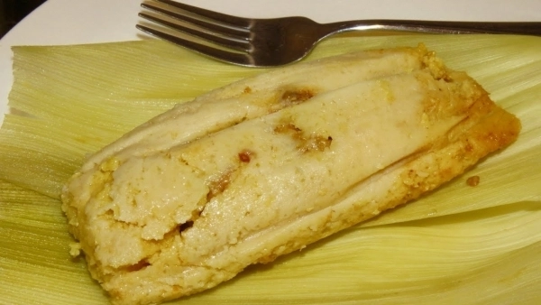
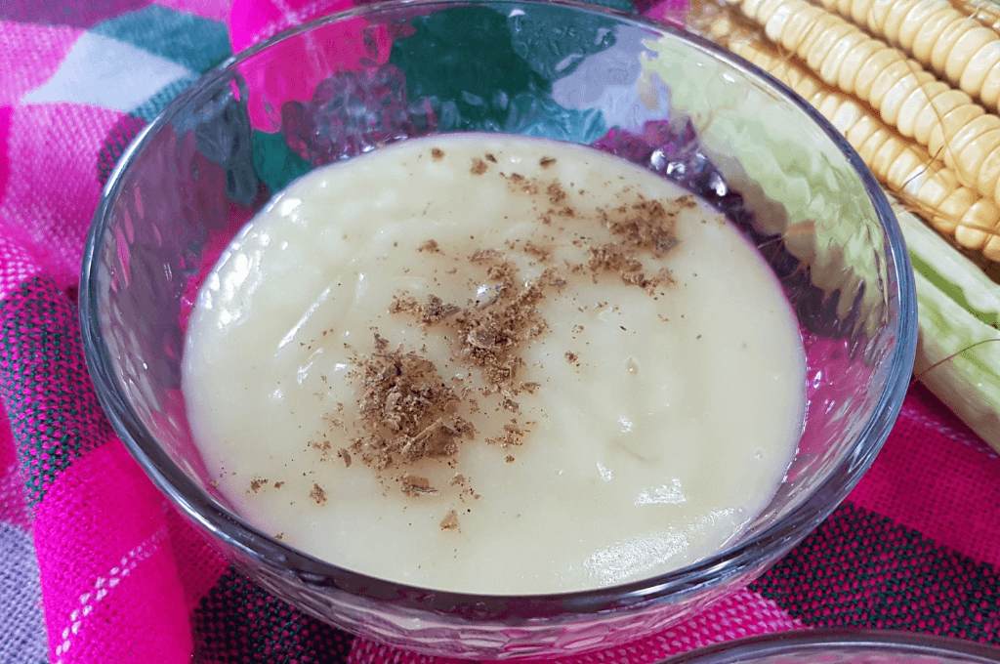
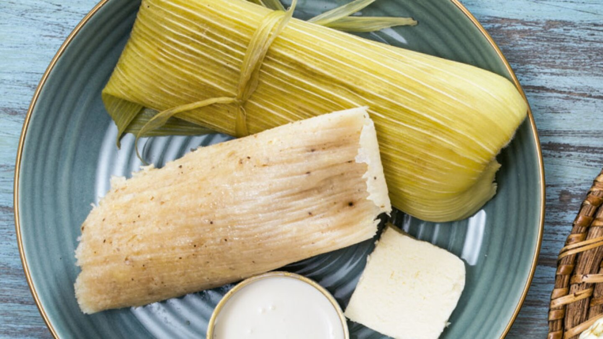

Choluteca es sinónimo de alegría y tradición. Entre sus principales festividades destaca la Feria Patronal en honor a San Sebastián, que se celebra cada enero con desfiles, danzas y gastronomía típica.
Montucas
Masa de maíz rellena de carne y especias.
Catedral de Choluteca
Bebida de maíz fermentado con un sabor único.
Tamal de Elote
Dulces y deliciosos, acompañados de crema y café.
Los mercados locales, llenos de colores y sabores únicos.
Música tradicional, con marimbas y guitarras que animan las celebraciones.
"La hospitalidad de la gente de Choluteca es tan cálida como su clima."